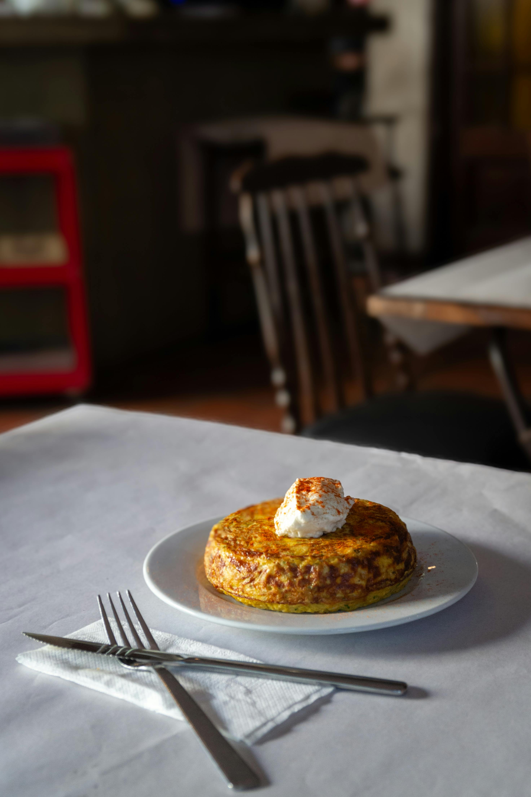

Receta
Tortilla de Papas a la Gaucha
Ingredientes
- 4 Huevos
- 3 papas medianas
- 1/2 cebolla
- Sal
- Aceite

Receta
- Cortar las papas en rodajas finas, estilo papas españolas.
Deben ser de tamaño mediano, ya que queremos que queden
bien unidas con el huevo. Les recomiendo que vean
cómo corto las papas en el video para que se den cuenta
aproximadamente del tamaño que deben tener.
- Colocar abundante aceite en una sartén. Es importante
saber que las papas -en la receta tradicional y auténtica
de la tortilla española- no deben freírse sino que
deben pocharse. Lo que vamos a hacer es poner la sartén a
fuego fuerte, y en cuanto esté tibio el aceite vamos a agregar
todas las papas. Si, ese es el primer truco: agregamos
las papas antes de que el aceite esté hirviendo. Las
dejamos cocinar durante 5 minutos.
- Mientras tanto vamos a cortar la cebolla en julianas.
Una vez pasados los 5 minutos agregamos las cebollas a la
sartén con las papas, revolviendo suavemente.
- Luego de revolver bien para que esté todo integrado en la
sartén, agregamos un poco de sal y vamos a bajar el
fuego al mínimo y vamos a tapar la sartén. Pero la vamos
a tapar sin que quede totalmente cerrada, dejando una
mínima abertura para que pueda salir el vapor. Así
la dejamos durante 15-20 minutos mientras de vez en
cuando vamos revolviendo suave y procurando que no se pegue.